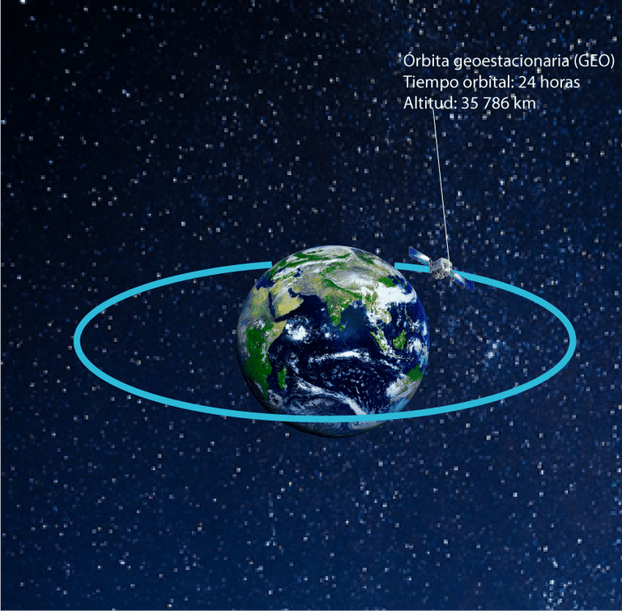
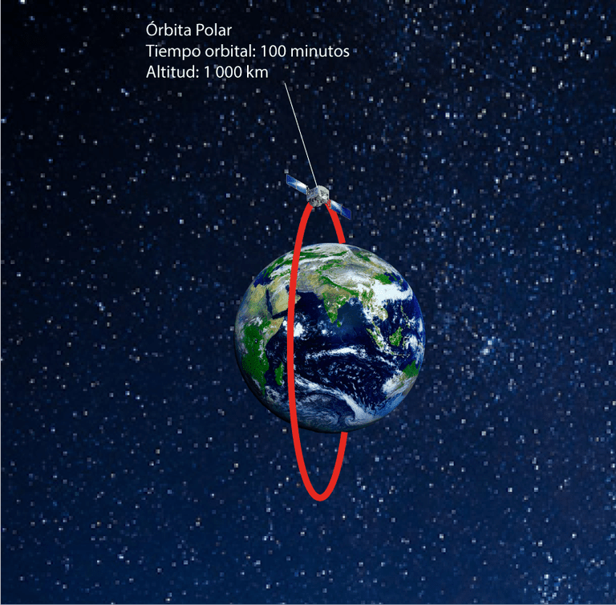
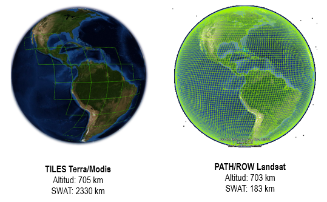

La resolución temporal indica la periodicidad o frecuencia con la que el sensor adquiere una imagen del mismo punto geográfico.
Este tipo de resolución depende de la plataforma en la que orbite o transite y del ángulo total de abertura del sensor.
Órbita Geoestacionaria
Los satélites de órbita geoestacionaria tienen una resolución temporal de minutos-horas-día debido a que siguen el movimiento de la tierra observando un mismo punto fijo sobre la superficie de la tierra. Ejemplo de esta orbita son la de los satélites meteorológicos.

Ilustración: Salvador Hernáez
Órbita Polar
Los satélites de órbita polar tienen una resolución temporal día-días debido orbitan alrededor de la tierra de polo a polo, permitiendo el monitoreo de toda la tierra aprovechando el movimiento de rotación de esta. Los satelites que monitorean la superficie terrestre o del océano, por lo general siguen esta orbita, como lo es el caso de la familia Landsat que se demoran 16 días en dar la vuelta completa a la tirra y volver al mismo punto, y los satélites Terra y Aqua que se demoran tan solo 1 día.

Ilustración: Salvador Hernáez
Los satélites Landsat y Terra/Aqua (comunmente llamados MODIS por el nombre de su sensor) son, lo mas probable, los satelites mas utilizados a la hora de estudiar la tierra, pero ambos tienen caracteristicas que los hacen diferentes. Por ejemplo, Terra/Aqua están a una orbita de 705km de la superficie de la tierra, por lo que su SWAT es de 2330 km, mientras que Landsat está a 703 km y su SWAT es de 183 km. De esta manera, como se puede observar en la siguiente figura, Terra/Aqua cubre mayor proporción de la tierra, por lo que se demoran menos en completar una visita a toda la superficie.
Ilustración: LabGRS